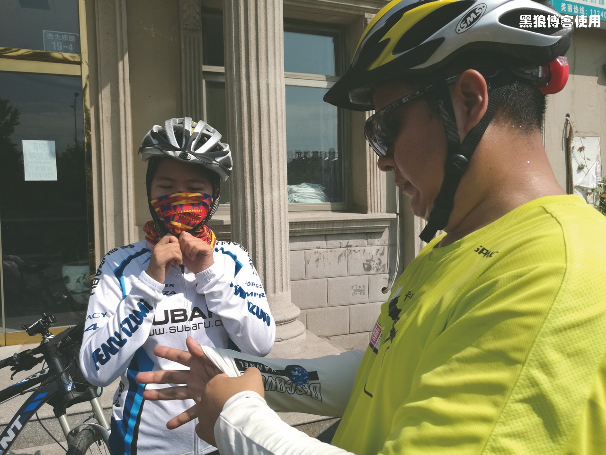
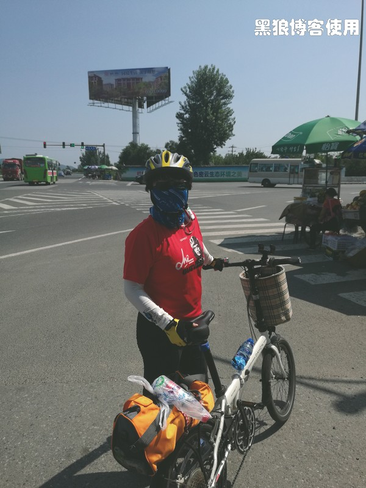
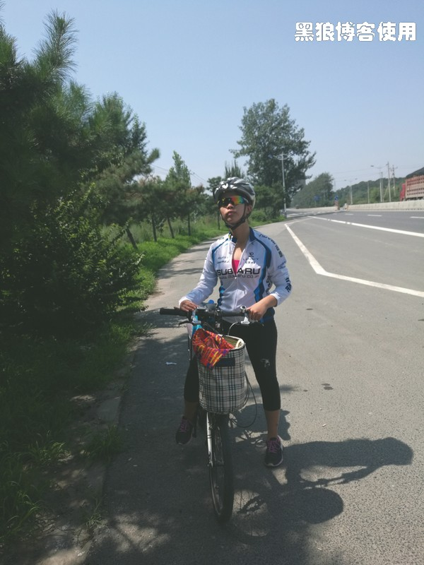
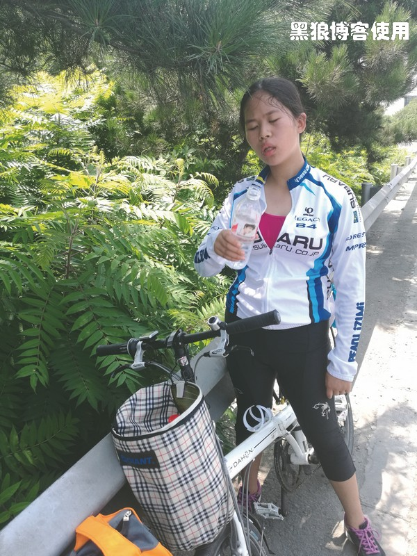
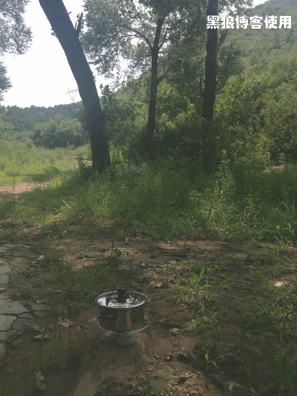
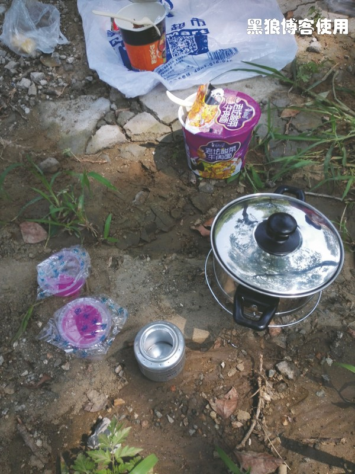
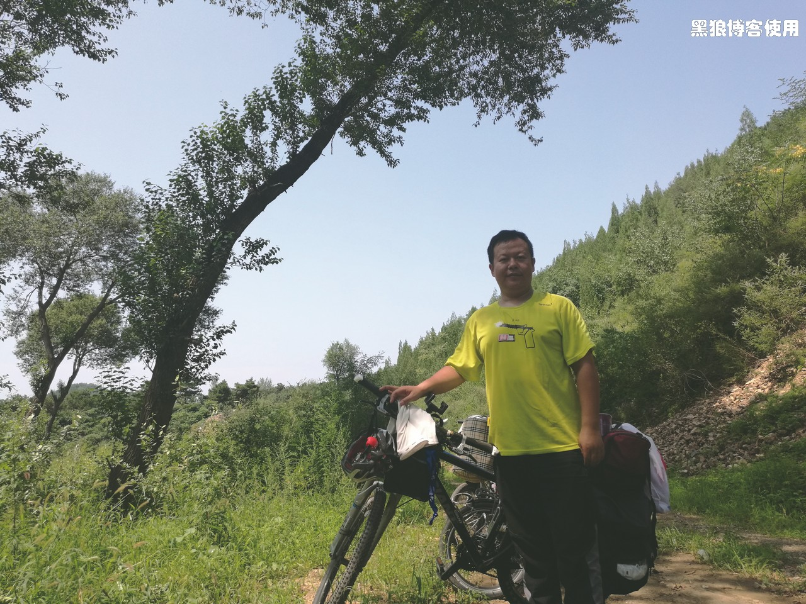
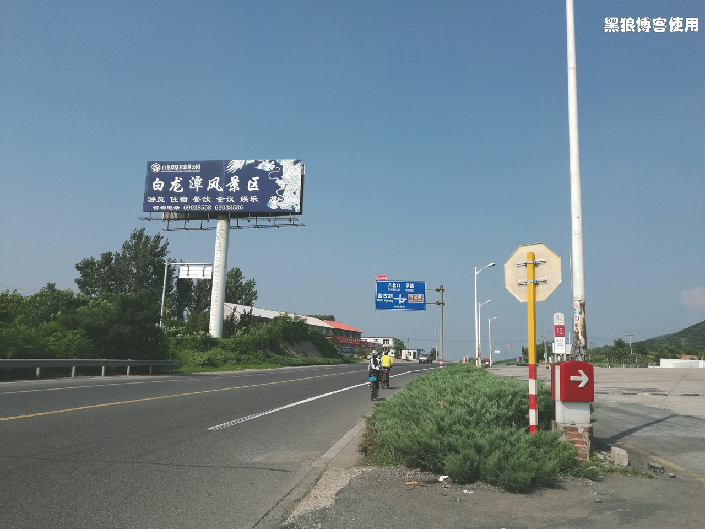
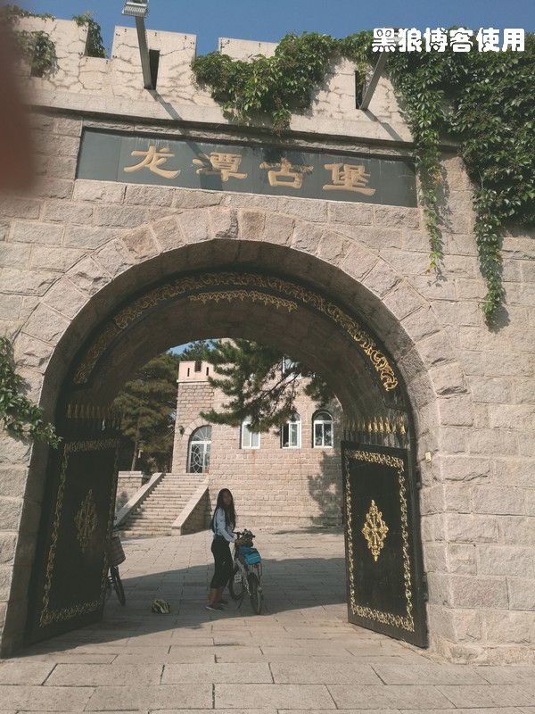
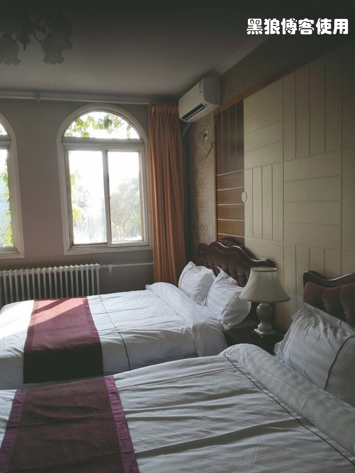

骑向乌兰布统（第二天，止步白龙潭）
黑狼语录：
—— 看起来不易做到的，真正做起来却是无比的简单，这就是骑行，迈出一步后就会发现它是如此的随意。
今天是 7 月 27 日，骑行乌兰布统的第二天。这次一家三口的骑行，是我送给方玉小升初的礼物，希望她能更深层次地体味到生活的各种滋味。
早上 7 点钟我就醒了，本想早点儿出发。胡有理和方玉还要继续睡一会儿，不想起床，并诉苦说是我昨夜的呼噜声让她们没有休息好。
到了 8:10 我被派出去买早点。
昨晚调整了骑行计划，把原来经承德到赤峰，再到通辽的路线，调整为直达乌兰布统大草原。
吃罢早饭，我感觉浑身有点酸软，胡有理没有什么不适，方玉肩膀有点疼。
出发的时候已经是 9:50 了， 天气晴朗、 暴晒，今天的目的地是古北口镇。
天气炎热，还没有出发，我就快被汗水湿透了。
红绿灯休息，这个灯已经变了好几次了。
上坡途中。
过了密云后，都是上坡路，大汗淋漓。
 13 点，已经骑行了 25 公里。埋锅造饭，用我自制的酒精炉，烧水煮方便面，用的是酒精块，结果 40 分钟后，水还没有开，只能用半开的水泡了方便面。以后有经验了，要同时用 2 个以上的酒精炉来烧水。
饭后神采奕奕。
14:40 继续出发，没走几步，方玉说她已经不行了，她不想活了，不想再上坡了，说她要做一段公交车。
又走了 5 公里，方玉不想继续前进了，要立刻入住宾馆。
考虑到天气过于炎热，就原地找宾馆休息。
入住在白龙潭景区的宾馆，很高大上。
房间有两张双人床。
洗溯完毕，晚上大吃了一顿白龙潭的鱼。
今天都是上坡路，骑到白龙潭，30 公里，离目的地还有 28 公里， 天气很热出汗很多，就早点儿休息了，避免发生意外中暑。
今天的路选择的是 G101，大货车较多，所幸自行车道还算较宽。最大的失误是出来得太晚了，一直在高温曝晒下骑行。